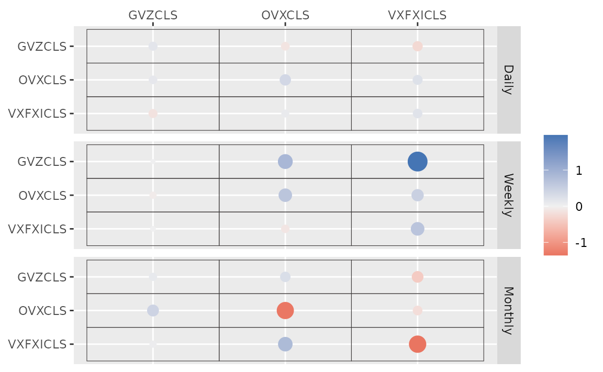
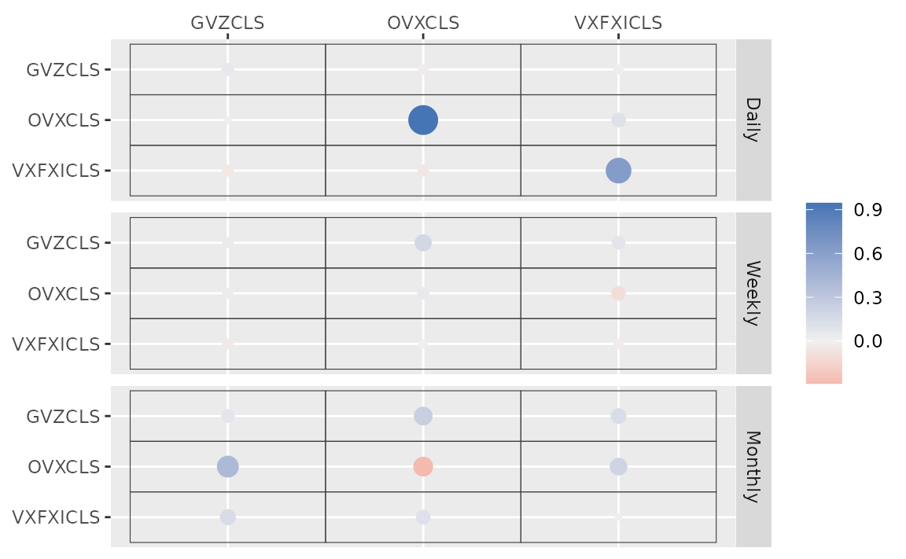
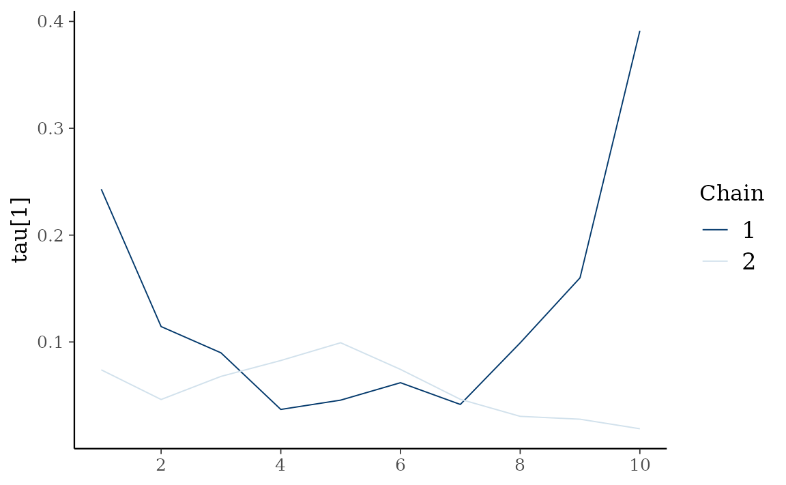
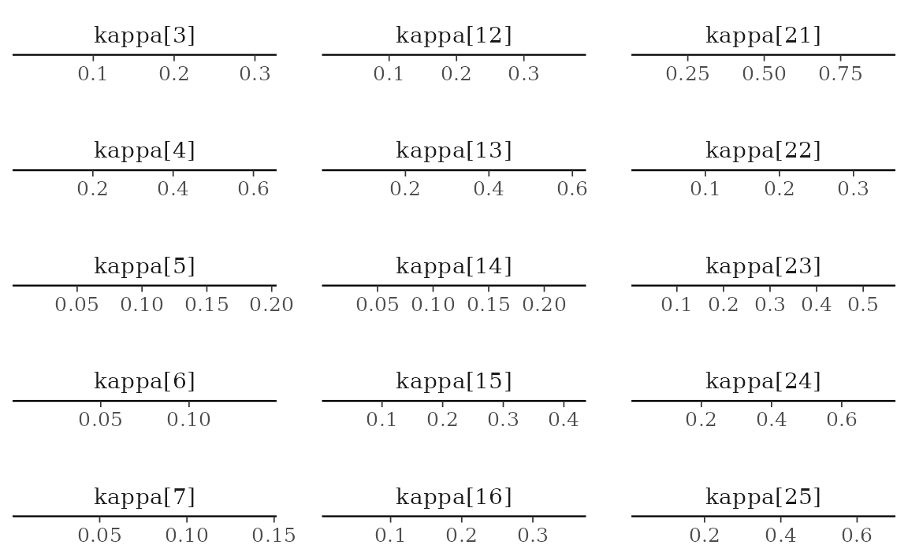

etf <- etf_vix[1:55, 1:3]
# Split-------------------------------
h <- 5
etf_eval <- divide_ts(etf, h)
etf_train <- etf_eval$train
etf_test <- etf_eval$testBayesian VAR and VHAR
var_bayes() and vhar_bayes() fit BVAR and
BVHAR each with various priors.
-
y: Multivariate time series data. It should be data frame or matrix, which means that every column is numeric. Each column indicates variable, i.e. it sould be wide format. -
porhar: VAR lag, or order of VHAR -
num_chains: Number of chains- If OpenMP is enabled, parallel loop will be run.
-
num_iter: Total number of iterations -
num_burn: Number of burn-in -
thinning: Thinning -
coef_spec: Coefficient prior specification.- Minneosta prior
- BVAR:
set_bvar() - BVHAR:
set_bvhar()andset_weight_bvhar() - Can induce prior on
using
lambda = set_lambda()
- BVAR:
- SSVS prior:
set_ssvs() - Horseshoe prior:
set_horseshoe() - NG prior:
set_ng() - DL prior:
set_dl()
- Minneosta prior
-
contem_spec: Contemporaneous prior specification. -
cov_spec: Covariance prior specification. Useset_ldlt()for homoskedastic model. -
include_mean = TRUE: By default, you include the constant term in the model. -
minnesota = c("no", "short", "longrun"): Minnesota-type shrinkage. -
verbose = FALSE: Progress bar -
num_thread: Number of thread for OpenMP- Used in parallel multi-chain loop
- This option is valid only when OpenMP in user’s machine.
Stochastic Search Variable Selection (SSVS) Prior
(fit_ssvs <- vhar_bayes(etf_train, num_chains = 1, num_iter = 20, coef_spec = set_ssvs(), contem_spec = set_ssvs(), cov_spec = set_ldlt(), include_mean = FALSE, minnesota = "longrun"))
#> Call:
#> vhar_bayes(y = etf_train, num_chains = 1, num_iter = 20, coef_spec = set_ssvs(),
#> contem_spec = set_ssvs(), cov_spec = set_ldlt(), include_mean = FALSE,
#> minnesota = "longrun")
#>
#> BVHAR with SSVS prior + SSVS prior
#> Fitted by Gibbs sampling
#> Total number of iteration: 20
#> Number of burn-in: 10
#> ====================================================
#>
#> Parameter Record:
#> # A draws_df: 10 iterations, 1 chains, and 90 variables
#> phi[1] phi[2] phi[3] phi[4] phi[5] phi[6] phi[7] phi[8]
#> 1 -0.12653 0.33809 -0.4063 0.83450 -0.0837 0.0786 -0.06567 0.1567
#> 2 0.14062 0.20715 -0.4043 0.06268 0.1470 0.0134 0.66528 -0.0353
#> 3 0.50002 0.21007 -0.3089 0.03100 0.0705 0.0383 0.20525 -0.0334
#> 4 0.19881 -0.07308 -0.0889 -0.00346 -0.2732 -0.0646 0.00358 -0.0982
#> 5 0.01917 0.00323 -0.1040 0.05931 -0.1828 -0.1766 -0.11164 0.2980
#> 6 0.05360 0.09245 -0.0783 -0.14020 -0.2887 -0.1908 -0.19322 -0.0847
#> 7 0.04501 0.09108 -0.0817 -0.97082 -0.0987 -0.2435 1.25380 1.0925
#> 8 0.24950 0.53442 -0.2132 -2.09965 -0.6910 -0.2955 2.07689 2.0892
#> 9 0.03687 -0.02904 0.0204 -1.24057 -0.2383 -0.4127 1.08957 0.9673
#> 10 -0.00362 -0.07775 0.0124 -1.39975 0.1540 -0.5541 1.77939 1.6711
#> # ... with 82 more variables
#> # ... hidden reserved variables {'.chain', '.iteration', '.draw'}autoplot() for the fit (bvharsp object)
provides coefficients heatmap. There is type argument, and
the default type = "coef" draws the heatmap.
autoplot(fit_ssvs)
#> Warning: `label` cannot be a <ggplot2::element_blank> object.
#> `label` cannot be a <ggplot2::element_blank> object.
#> `label` cannot be a <ggplot2::element_blank> object.
Horseshoe Prior
coef_spec is the initial specification by
set_horseshoe(). Others are the same.
(fit_hs <- vhar_bayes(etf_train, num_chains = 2, num_iter = 20, coef_spec = set_horseshoe(), contem_spec = set_horseshoe(), cov_spec = set_ldlt(), include_mean = FALSE, minnesota = "longrun"))
#> Call:
#> vhar_bayes(y = etf_train, num_chains = 2, num_iter = 20, coef_spec = set_horseshoe(),
#> contem_spec = set_horseshoe(), cov_spec = set_ldlt(), include_mean = FALSE,
#> minnesota = "longrun")
#>
#> BVHAR with Horseshoe prior + Horseshoe prior
#> Fitted by Gibbs sampling
#> Number of chains: 2
#> Total number of iteration: 20
#> Number of burn-in: 10
#> ====================================================
#>
#> Parameter Record:
#> # A draws_df: 10 iterations, 2 chains, and 124 variables
#> phi[1] phi[2] phi[3] phi[4] phi[5] phi[6] phi[7]
#> 1 0.3966 0.06624 -0.04871 0.38894 -0.073796 0.060807 -0.11783
#> 2 -0.0702 0.05350 -0.02313 0.01625 0.102949 -0.083444 0.23774
#> 3 0.0616 0.02422 -0.16276 -0.05549 -0.022509 -0.006240 0.34429
#> 4 -0.0212 0.01121 -0.20882 0.04573 -0.080171 -0.004884 0.28627
#> 5 0.0240 -0.03930 -0.21210 0.00807 0.000561 0.021590 0.19611
#> 6 0.1203 0.02930 -0.00324 0.20999 0.020411 -0.013568 0.00470
#> 7 0.0786 0.00643 -0.06914 -0.14220 0.035252 0.000268 0.02279
#> 8 0.0973 0.01540 0.10813 0.06099 -0.126038 0.007747 0.06279
#> 9 0.1122 0.01931 -0.09498 -0.04683 0.123461 -0.012483 -0.02566
#> 10 0.1360 -0.04451 0.00468 0.01335 0.312362 -0.026677 0.00279
#> phi[8]
#> 1 0.192
#> 2 0.427
#> 3 0.478
#> 4 0.726
#> 5 0.668
#> 6 0.316
#> 7 0.618
#> 8 0.483
#> 9 0.514
#> 10 0.290
#> # ... with 10 more draws, and 116 more variables
#> # ... hidden reserved variables {'.chain', '.iteration', '.draw'}
autoplot(fit_hs)
#> Warning: `label` cannot be a <ggplot2::element_blank> object.
#> `label` cannot be a <ggplot2::element_blank> object.
#> `label` cannot be a <ggplot2::element_blank> object.
Minnesota Prior
(fit_mn <- vhar_bayes(etf_train, num_chains = 2, num_iter = 20, coef_spec = set_bvhar(lambda = set_lambda()), cov_spec = set_ldlt(), include_mean = FALSE, minnesota = "longrun"))
#> Call:
#> vhar_bayes(y = etf_train, num_chains = 2, num_iter = 20, coef_spec = set_bvhar(lambda = set_lambda()),
#> cov_spec = set_ldlt(), include_mean = FALSE, minnesota = "longrun")
#>
#> BVHAR with MN_Hierarchical prior + MN_Hierarchical prior
#> Fitted by Gibbs sampling
#> Number of chains: 2
#> Total number of iteration: 20
#> Number of burn-in: 10
#> ====================================================
#>
#> Parameter Record:
#> # A draws_df: 10 iterations, 2 chains, and 63 variables
#> phi[1] phi[2] phi[3] phi[4] phi[5] phi[6] phi[7] phi[8]
#> 1 0.4138 0.0619 -0.0515 -0.0866 0.3069 -0.1720 -0.1077 -0.0978
#> 2 0.3537 0.2230 -0.2305 0.3081 -0.0559 0.0545 -0.1199 0.0387
#> 3 0.2705 0.1480 -0.0465 0.1397 0.0360 -0.0918 0.0420 0.1023
#> 4 0.3118 0.4146 -0.1969 0.0566 -0.0404 0.0858 0.0694 -0.0165
#> 5 0.4405 -0.0732 0.0575 0.3073 0.0506 -0.0732 0.0897 0.0475
#> 6 0.0848 0.0288 -0.2301 0.1998 0.1407 0.1085 0.0722 0.2166
#> 7 0.1809 0.0168 -0.0362 0.2371 0.1832 -0.0957 0.1701 0.1061
#> 8 0.1078 -0.1695 -0.2035 0.3734 0.2829 0.0529 0.3574 0.1292
#> 9 0.1737 -0.2284 -0.0848 0.2388 0.3014 0.0252 0.2573 0.2120
#> 10 0.2752 -0.1289 -0.1289 0.2318 0.3415 -0.1629 -0.1696 0.3704
#> # ... with 10 more draws, and 55 more variables
#> # ... hidden reserved variables {'.chain', '.iteration', '.draw'}Normal-Gamma prior
(fit_ng <- vhar_bayes(etf_train, num_chains = 2, num_iter = 20, coef_spec = set_ng(), cov_spec = set_ldlt(), include_mean = FALSE, minnesota = "longrun"))
#> Call:
#> vhar_bayes(y = etf_train, num_chains = 2, num_iter = 20, coef_spec = set_ng(),
#> cov_spec = set_ldlt(), include_mean = FALSE, minnesota = "longrun")
#>
#> BVHAR with NG prior + NG prior
#> Fitted by Metropolis-within-Gibbs
#> Number of chains: 2
#> Total number of iteration: 20
#> Number of burn-in: 10
#> ====================================================
#>
#> Parameter Record:
#> # A draws_df: 10 iterations, 2 chains, and 97 variables
#> phi[1] phi[2] phi[3] phi[4] phi[5] phi[6] phi[7]
#> 1 0.0673 -0.08938 0.03863 0.002067 0.18437 -0.00885 0.528
#> 2 0.0876 0.08196 -0.02062 -0.000971 -0.02574 -0.04645 -0.043
#> 3 0.0900 0.12539 -0.05620 0.007897 -0.04852 -0.06326 -0.150
#> 4 0.0571 -0.15496 -0.12529 -0.005918 0.07125 0.03216 -0.054
#> 5 -0.0333 0.00986 -0.10095 0.000738 0.03849 -0.02630 0.265
#> 6 0.1375 -0.09162 -0.13019 -0.000196 0.12008 -0.12073 0.447
#> 7 0.0553 -0.01401 -0.04965 -0.000145 0.00915 -0.13014 0.371
#> 8 0.1157 -0.05405 -0.00993 -0.007059 0.00462 -0.27838 0.380
#> 9 -0.0154 0.06749 -0.16720 0.005344 0.00302 -0.06744 0.605
#> 10 -0.0373 -0.01340 -0.05551 0.005132 0.00191 0.05309 0.252
#> phi[8]
#> 1 0.06100
#> 2 0.49112
#> 3 0.17640
#> 4 0.00174
#> 5 -0.04652
#> 6 0.18592
#> 7 0.40027
#> 8 0.40169
#> 9 0.52747
#> 10 0.33785
#> # ... with 10 more draws, and 89 more variables
#> # ... hidden reserved variables {'.chain', '.iteration', '.draw'}Dirichlet-Laplace prior
(fit_dl <- vhar_bayes(etf_train, num_chains = 2, num_iter = 20, coef_spec = set_dl(), cov_spec = set_ldlt(), include_mean = FALSE, minnesota = "longrun"))
#> Call:
#> vhar_bayes(y = etf_train, num_chains = 2, num_iter = 20, coef_spec = set_dl(),
#> cov_spec = set_ldlt(), include_mean = FALSE, minnesota = "longrun")
#>
#> BVHAR with DL prior + DL prior
#> Fitted by Gibbs sampling
#> Number of chains: 2
#> Total number of iteration: 20
#> Number of burn-in: 10
#> ====================================================
#>
#> Parameter Record:
#> # A draws_df: 10 iterations, 2 chains, and 91 variables
#> phi[1] phi[2] phi[3] phi[4] phi[5] phi[6] phi[7]
#> 1 -0.00239 1.68e-04 0.02170 0.422482 0.000518 -0.0159 -0.495052
#> 2 -0.11489 -1.01e-04 -0.09058 -0.161925 0.001962 0.0260 0.288790
#> 3 0.09675 -1.03e-04 -0.05739 -0.072469 -0.007962 0.0362 0.023629
#> 4 0.10078 9.25e-05 -0.04879 -0.023701 0.002286 -0.0387 -0.009170
#> 5 -0.03324 -1.26e-06 -0.03554 0.031459 0.002868 -0.0562 0.020514
#> 6 -0.02685 -3.96e-06 0.00793 0.028456 0.012527 -0.1012 0.008080
#> 7 0.06241 -3.95e-06 0.00953 0.007177 0.020831 -0.0665 -0.001462
#> 8 0.17010 2.26e-06 0.04481 0.001086 -0.054743 0.0309 -0.000354
#> 9 0.02462 -4.46e-07 -0.07490 -0.002261 0.088378 0.0111 0.000552
#> 10 0.05811 -2.73e-06 -0.04678 0.000935 -0.030620 -0.0113 -0.000847
#> phi[8]
#> 1 0.422
#> 2 0.499
#> 3 0.466
#> 4 0.689
#> 5 0.679
#> 6 0.305
#> 7 0.445
#> 8 -0.211
#> 9 0.533
#> 10 0.648
#> # ... with 10 more draws, and 83 more variables
#> # ... hidden reserved variables {'.chain', '.iteration', '.draw'}Bayesian visualization
autoplot() also provides Bayesian visualization.
type = "trace" gives MCMC trace plot.
autoplot(fit_hs, type = "trace", regex_pars = "tau")
type = "dens" draws MCMC density plot. If specifying
additional argument facet_args = list(dir = "v") of
bayesplot, you can see plot as the same format with
coefficient matrix.
autoplot(fit_hs, type = "dens", regex_pars = "kappa", facet_args = list(dir = "v", nrow = nrow(fit_hs$coefficients)))